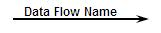
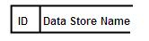
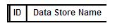
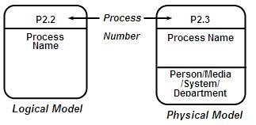
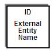
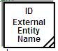
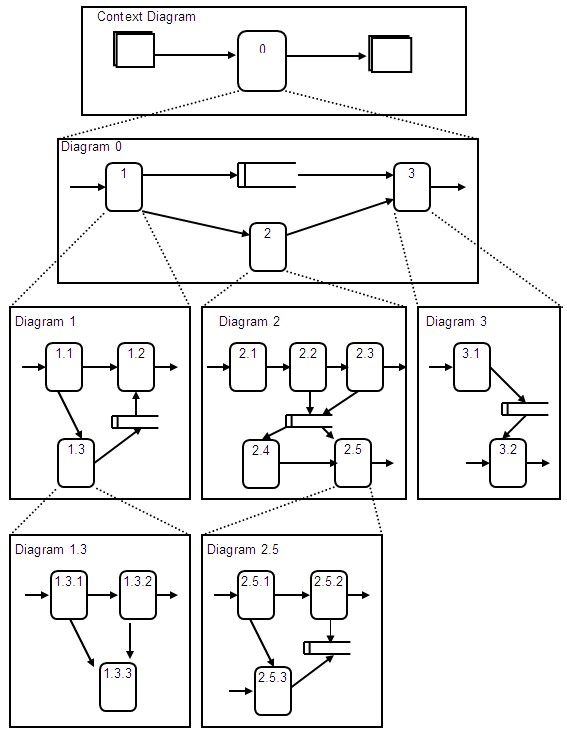

Data Flow Diagrams express the flow of application data with four symbols. Four symbols are:
-
Data Flow - Indicate the flow of data.
-
Data Store - Indicates store of data (file and database).
-
Process box - Indicates a transformation of flows of data.
-
External Entity - Indicates the source or destination of data (such as an organization, personnel, or other
subsystem).
Data Flow
-
A data flow is expressed by an arrow and shows the flow of information consisting of one or more data elements.
-
Enter all the data element names that flow on the arrow.
-
If a large number of data elements must be written, use a generic name or a representative name.
-
A generic name or a representative name must indicate the contents of the data precisely.
-
When a generic name or a representative name is used, assign identification numbers (ID) to the data flow
and describe the data element names in a separate data flow description.
-
Indicate the direction of a data flow to a process box, data store, or external entity by using an arrow.
-
Enter the name (data element name, generic name or representative name) near the data flow.
-
"Flow of materials", "action", or "flow of control" should not be indicated by a data flow. If those flows need
to be drawn, different notations from that of Data Flow should be used.

Data Store
-
A Data store box can be referred as data storage (file and database).
-
The data flow corresponding to a data store need not show the means of physical access. For example, in a case
where data is updated after a credit sales file is read an arrow to show the action of reading is not needed.
-
In the case where a data store name and identification number (ID) are used, they must be entered.


Process Box (Process)
-
A process shows the transformation of data from an input data flow to an output data flow.
-
For the names of processes, use explicit representations that clearly express functions and operations by
combining verb and object.
-
Clear representations: prepare, extract, store, verify.
-
Unclear representations: process, handle.
-
For processes, the process number can be entered in the upper section, and in the case of a physical model, the
organization name and the name of the person in charge who carries out the process can be entered in the lower
section.

External Entity (Data Source and Destination)

-
In cases where the same data source or destination is used more than once in a data flow diagram, add diagonal
line(s) to the lower right section to show that they are the same one.

Explosion of Data Flow Diagram
DFD can be drawn into details in a top-down manner. The highest level of DFD is called diagram 0, where major data
flows and data stores, and several processes are drawn to capture overall data flow of the application. By breaking
down each process on the diagram into the sufficient level of details, overall application structures and processes
become clear. Each process at the lower level will need to be related back to the high-level process. And also, it is
recommended to develop a context diagram to clarify the scope of analysis, which consists of one process, several
external entities.
-
The context diagram is a special case of the DFD, in which a single process box represents the entire system.
-
The context diagram highlights several important characteristics of the system:
-
The people organizations, or systems, with which the system communicates. These are known as external
entities.
-
The data that the system receives from the outside world and that must be processed in some way.
-
The data produced by the system and sent to the outside world.
-
The data stores that are shared between the system and the external entities. These data stores are either
created outside the system and used by the system, or created by the system and used outside the system.
-
The boundary between the system and the rest of the world.
-
Even if there are a great many processes that could be expressed in the DFDs at each level, make a goal of
limiting the number of processes to seven per each diagram and break down the processes into the lower levels
to show the details.
-
Reference between the DFDs at each level is made possible by the correspondence of process numbers and DFD
diagram numbers. This can be done by giving the lower-level process box an identification number that is a
decimal of the high-level process box. For example, the process box number 3 at the level of diagram is
decomposed into 3.1, 3.2, 3.3, etc. If it is necessary to go to a third level, 3.3 is decomposed into 3.3.1,
3.3.2, and so on.
-
All the data elements that enter and leave the original process box should appear in the diagram after it is
exploded.
-
A data store that newly appears as a result of explosion is not shown in high level DFDs if it is one that is
used only within the exploded DFD.
Each process should be exploded as the need arises. The level of detail (depth of hierarchy) need not necessarily be
the same.

|